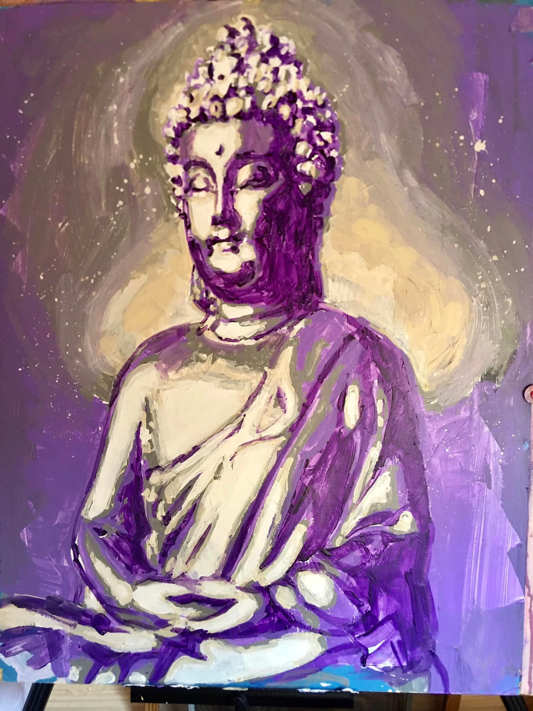
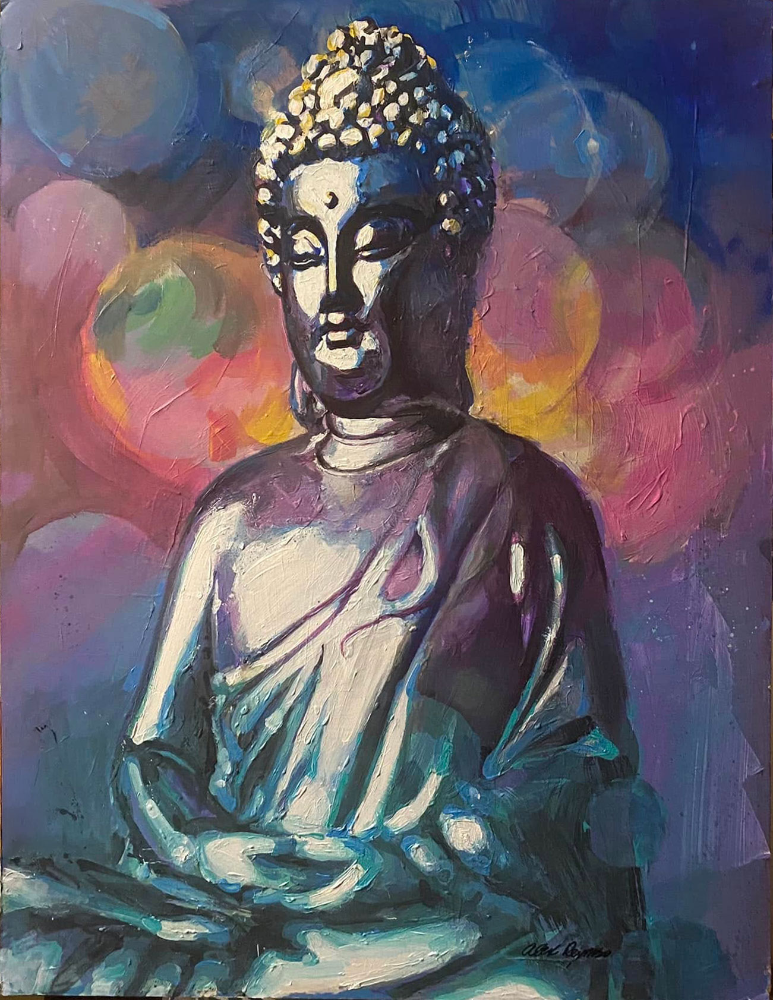
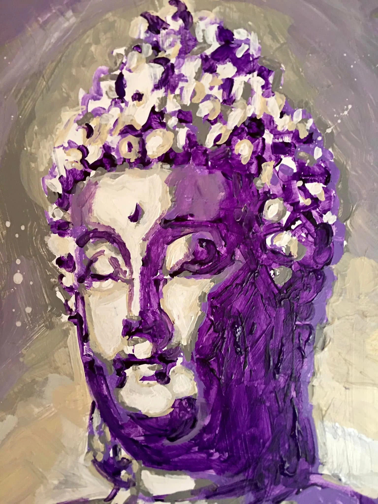
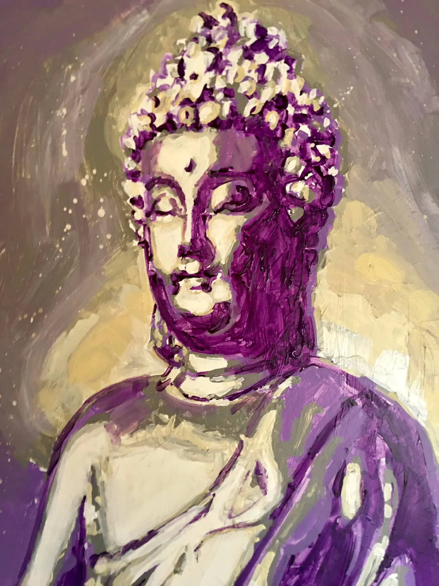
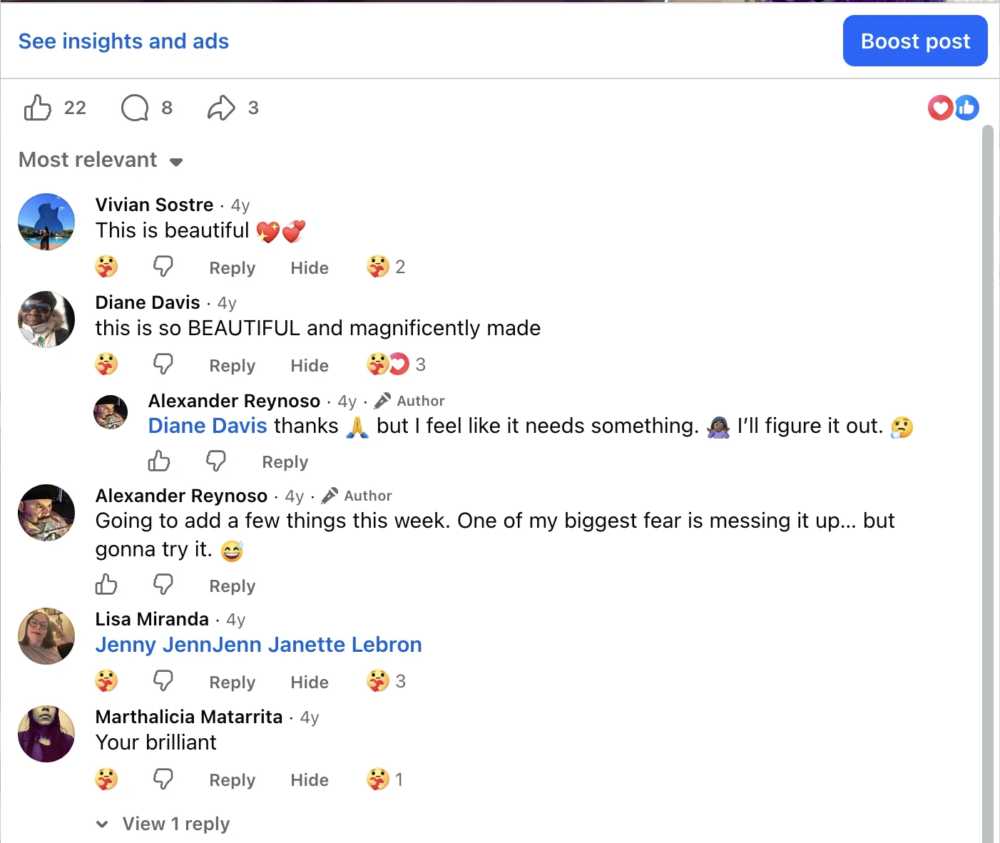

Early Layers
The painting began with softer purple, cream and gray tones, establishing the figure before the brighter colors emerged.
2022

Gratitude and Joy, Buddha is a 2022 acrylic painting exploring stillness, color and reflection through the seated Buddha figure.
The painting developed over several stages, beginning with a purple, cream and gray palette before expanding into layers of blue, teal, pink and gold. Work in progress was documented in January 2022, with the finished painting shared in October 2022.
From the first layers to the finished work, 2022.

The painting began with softer purple, cream and gray tones, establishing the figure before the brighter colors emerged.

A closer look at the developing face and the painted surface as the portrait takes shape.

Another moment from the studio, preserving the brushwork and color decisions along the way.
Archived footage captures the painting during its early development.
The completed work brings the layers of blue, teal, pink and gold together.

A snapshot of the conversation surrounding the painting, including a comment from Marthalicia.